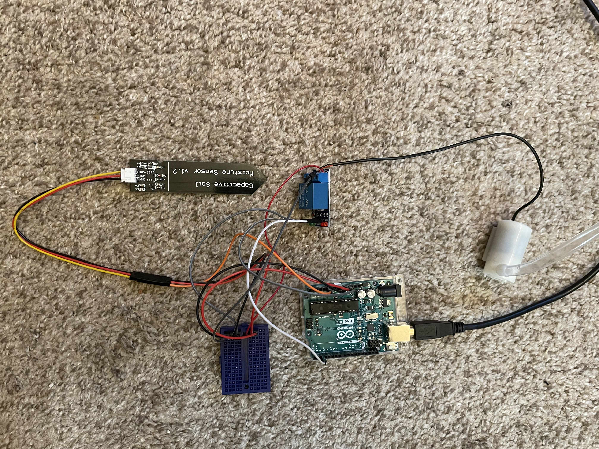

I had the opportunity to choose any project of my liking using Arduino Uno. I created a self-watering plant system which adds water directly to the soil every time the moisture level is low.

The system was created using moisture sensor to determine the soil moisture level and would send those values into Arduino Uno. If watering is necessary, Arduino would send signal to the pump motor controller thus activating the pump delivering water directly to the soil.